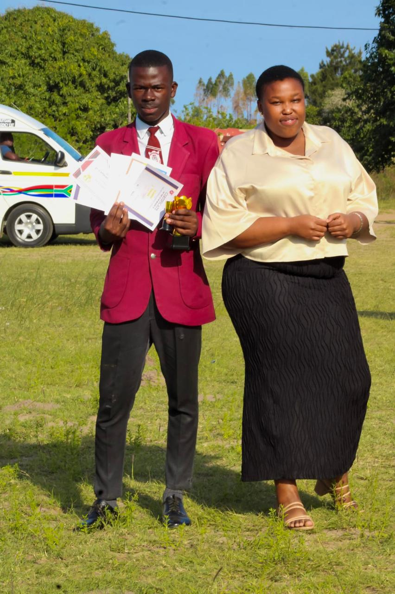

My path so far.
From Ntulufakazi to Durban University of Technology — my education and the milestones along the way.
I come from a disadvantaged background in Mtubatuba. I believe hard work is the tool that changes a life — it's carried me through every stage of my education so far.
Bachelor of Information & Communication Technology
Started my ICT studies in 2025, building on the foundation I set in high school and continuing to work toward a career in networking and technology.
National Senior Certificate
Served as Vice President for 2024 and as a member of the Representative Council of Learners (RCL). Finished the 2024 matric academic year in 3rd position among the top achievers — proof that hard work pays off.

Primary School
Completed my primary education in Ntulufakazi, Mtubatuba, where the habits of discipline and hard work that carried me through high school first took shape.